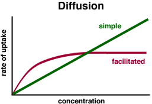

The Biology Project > Cell Biology > Cell Membranes > Problem Set
Cell Membranes Problem Set
Problem 7: Diffusion
Tutorial to help answer the question
Crossing a membrane by simple diffusion can be distinguished from facilitated diffusion because:
A. Simple diffusion does not require energy: facilitated diffusion requires a source of ATP. B. Simple diffusion can only move material in the direction of a concentration gradient; facilitated diffusion moves materials with and against a concentration gradient. C. Simple diffusion is not saturable; facilitated diffusion rates are limited by the number of functional membrane proteins and can be saturated* D. Simple diffusion is found only in prokaryotes while facilitated diffusion is found only in eukaryotes. Tutorial
Diffusion
Diffusion means that the net movement of particles (molecules) is from an area of high concentration to low concentration.  If the particles can move through the lipid bilayer by simple diffusion, then there is no limit to the number that can fit through the membrane. The rate of diffusion increases linearly as we add more particles to one side of the membrane.
If the particles can only pass through protein channels, then the rate of diffusion is determined by the number of channels as well as the number of particles.
Once the channels operate at their maximal rate, a further increase in particle numbers no longer increases the apparent rate of diffusion. At this limited rate we describe the protein channel as being saturated.
The cartoon illustrates several points about facilitated diffusion. The particles are more concentrated on one side of the membrane, and yet they can move in both directions. However, the net movement is from high particle concentration to low. If the number of particles gets so high on one side of the membrane that they interfere with diffusion through the protein channel, then we observe a limit to the rate of diffusion at the point of saturation.
animation used with permission of the Virtual Cell Web Page
The Biology Project > Cell Biology > Cell Membranes > Problem Set
Department of Biochemistry and Molecular Biophysics
University of Arizona
May 2002
Revised: August 2004
Contact the Development Team
http://biology.arizona.edu
All contents copyright © 2002-04. All rights reserved.